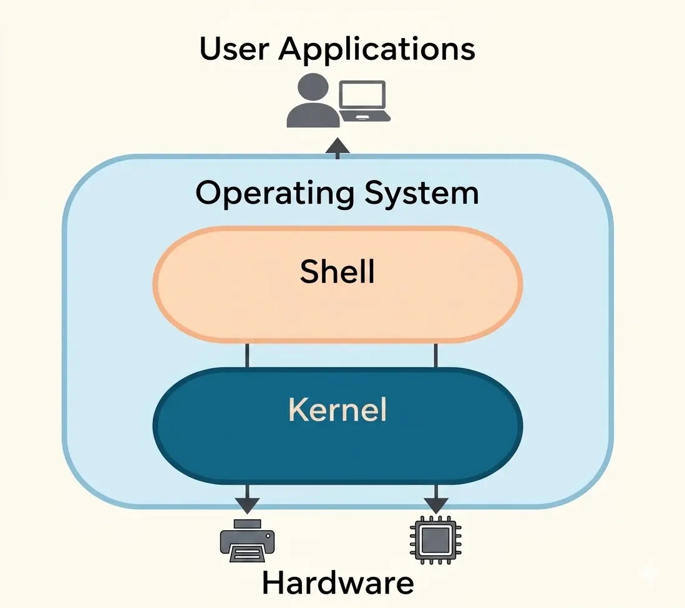

Introduction To Operating System (OS)
An Operating System (OS) is system software that manages computer hardware, runs applications, and provides a user interface.
Examples:
- Microsoft Windows
- macOS
- Linux
- Android
- iOS
Operating System as the Central Controller
The operating system works like a traffic controller of a computer. It manages:
- Which task should run first
- How memory should be used
- Which devices should work at a certain time
the OS manages all these tasks together without crashing the system.
Role in user Hardware Interaction
Computer hardware cannot directly understand human language. The operating system acts as a bridge or translator between the user and the hardware.
Example:
When you click an icon or type on a keyboard:
- Now the operating system converts your actions into machine instructions[0,1].
- Then the hardware performs the required task.
This allows people to use computers easily without understanding hardware details.
Responsibilities in Multi-User Environment Tasks
In schools, offices, or online systems, many users may use the same computer system. The OS manages this environment by:
- Creating separate user accounts
- Protecting user privacy
- Sharing Resources Fairly (Resources like CPU, memory, printers, storage)
- Preventing unauthorized access
Creating and Managing User Accounts
The OS allows different users to have separate accounts with their own:
- files
- passwords
- settings
- desktop environment
Example:In a school computer lab, each student logs in using their own username and password. This keeps everyone’s work separate and secure.
Architecture of an Operating System
OS architecture means how different parts of the operating system are organized and work together. Each part performs a special task, and together they make the computer work properly.
Example:Just like a school has:
- administration
- teachers
- support staff
Structure or Diagram

Kernel vs Shell
Kernal:Core part of the OS that directly manages hardware (CPU, memory, devices, processes). It works in the background.
Shell:Interface between the user and the kernel. It takes user commands (CLI/GUI actions) and sends them to the kernel.
Example:When you type a command or click an icon, the shell takes that input and sends it to the kernel for processing.
Simple way to remember:- Shell = takes your command
- Kernel = does the actual work
Types of Shell:
There are 2 types of Shell.
- Graphical Shells
- Command Line Shells
Command Line Shell (CLI Shell)
A text-based shell where users type commands to interact with the operating system. It is fast and widely used by advanced users.
Example: Bash, Windows Command Prompt
Graphical Shell (GUI Shell)
A visual shell that uses icons, windows, and menus instead of text commands. It is easier for beginners to use.
Example: Windows Desktop Environment, macOS Finder
OS Layers and Modular Design
Lower Layer
This layer is closest to the hardware. It directly interacts with system hardware like CPU, memory, and devices. It includes the kernel and device drivers.
Middle Layer
This layer acts as a bridge between hardware and user applications. It handles important services like memory management, process management, and system calls.
Upper Layer
This is the user-facing layer. It includes the user interface (GUI/CLI), system applications, and user programs that allow users to interact with the computer.
Each layer depends on the layer below it.
✔️ Benefits of Layered Design:
- easier to manage
- easier to repair
- easier to upgrade without changing the whole OS
✔️ School Example:
- Support staff → lower layer
- Administration → middle layer
- Teachers/students → upper layer
✔️ Example 1: Hospital System 🏥
- Lower layer → Support staff (cleaners, technicians, helpers) → Take care of machines and hospital environment
- Middle layer → Management (doctors, administration) → Control resources, treatment plans, and decisions
- Upper layer → Patients → Use services provided by hospital
✔️ Example 2: Restaurant System 🍽️
- Lower layer → Kitchen staff (cooks, helpers) → Prepare food (work behind the scenes)
- Middle layer → Manager → Takes orders and manages food delivery
- Upper layer → Customers → Place orders and receive food
✔️ Example 3: Bank System 🏦
- Lower layer → Bank servers and back-office staff → Handle data processing and transactions
- Middle layer → Bank employees → Manage accounts and operations
- Upper layer → Customers → Use ATM, mobile app, or visit bank
System Libraries
System libraries are a built-in collection of reusable functions used by applications to interact with the operating system.
When you click “Save” in an app:
- The app uses system library functions to request file saving
- Then the operating system handles it using system calls
Device Drivers
Device drivers are special programs that help the operating system communicate with hardware devices.
✔️ Examples:
- Printer drivers
- Keyboard drivers
- Graphics card drivers
Without drivers, the operating system cannot properly control hardware devices.
Multiple Choice Questions (MCQs) on Operating System
Test Yourself: Interactive MCQs (Operating System)
Lectures
Related Posts
- Top 10 Programming Languages in 2025
- How AI Will Replace and Create Jobs by 2030
- Best Online Courses for High-Paying Jobs in 2025
FAQs
An Operating System is system software that manages computer hardware, software applications, and provides a user interface.
Examples include Microsoft Windows, macOS, Linux, Android, and iOS.
Because it manages CPU, memory, files, and devices and ensures all tasks run smoothly.
The OS converts user actions (clicks, typing) into machine instructions that hardware can understand and execute.
The kernel is the core part of the OS that directly manages hardware resources like CPU, memory, and devices.
A shell is an interface between the user and the kernel that processes user commands.
CLI uses text commands (like Command Prompt), while GUI uses icons, windows, and menus (like Windows Desktop).
It allows multiple users to use the same system while keeping their data separate and secure.
User accounts keep personal files, settings, and passwords separate for each user.
System libraries are collections of reusable functions that help applications communicate with the operating system.
Device drivers are software programs that help the operating system communicate with hardware devices like printers and keyboards.
OS architecture refers to how different parts of the operating system are organized and work together.
The OS has lower (hardware), middle (services), and upper (user interface and applications) layers.
It makes the system easier to manage, upgrade, and maintain without affecting the entire OS.
The OS converts the action into machine instructions and sends it to the hardware for execution.